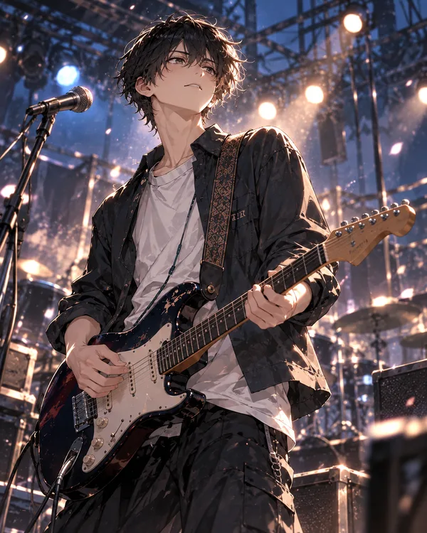
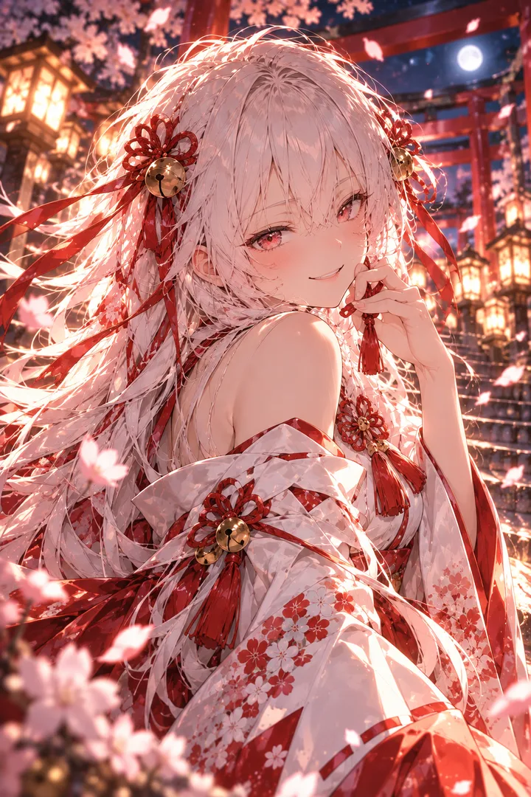
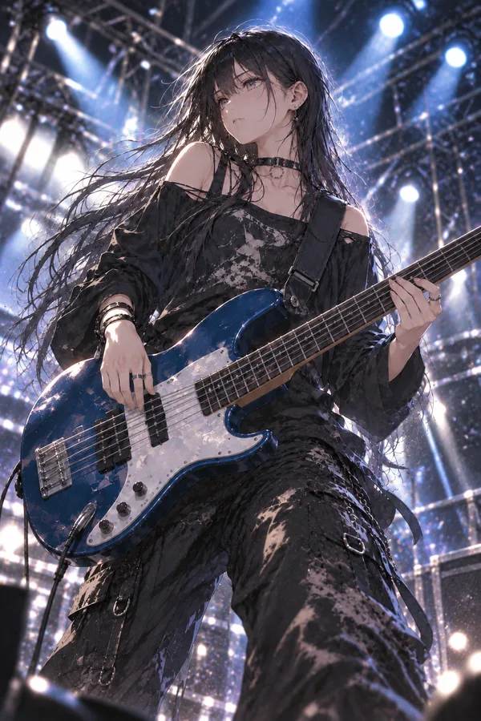
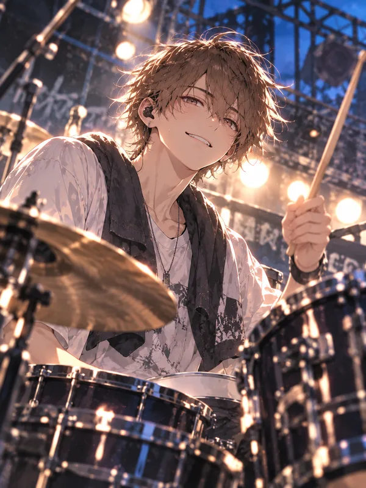
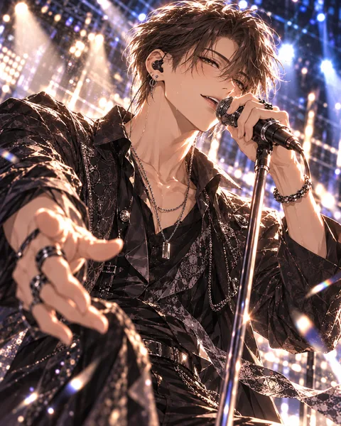

GUITAR
アキAki
雨音クラブのギター。勢いで突っ走っては空回りしがち。四人で続けることを、最後まで諦められない。
STORY
第一章
解散寸前のバンドに、音を聞く神様がついてきた。
四人組バンド「雨音クラブ」は、解散寸前だった。
ボーカルのレンとベースのシズクは、付き合って、別れて、それ以来まともに口も利かない。
ドラムのヒロキは「もう解散でよくない？」と完全に投げ気味。
それでもギターのアキだけは、この四人で続けることを諦められずにいた。
そんなある日、レンが言う。
「俺、バンドやめるわ」
どうにもできないまま練習帰りに立ち寄った小さな神社で、アキは柄にもなく手を合わせた。
「……解散しませんように」
賽銭を投げた拍子に、ポケットのお菓子まで賽銭箱へ落ちる。
拾うのも面倒になって、「それもやるよ」とそのまま帰った。
翌日。
「昨日の菓子、もうないのか？」
知らない少女がついてきた。
名前はミョン。どうやら音にまつわる神様らしい。
けれど、レンをバンドに戻してくれるわけでもない。シズクと仲直りさせてくれるわけでもない。
むしろ人間の事情などお構いなしに、アキが聞きたくなかったことばかり口にする。
「願ったのはお前だろう。なら、お前がどうにかせい」
解散したくないギタリストと、音にだけやたらとうるさい妙な神様。
壊れかけたバンドが、元には戻れないまま、それでも次の音を探していく物語。

GUITAR
アキAki
雨音クラブのギター。勢いで突っ走っては空回りしがち。四人で続けることを、最後まで諦められない。

GOD OF SOUND
ミョンMyon
音にまつわる神様。お賽銭と一緒に落ちたお菓子につられて、アキについてきた。人間の事情はお構いなしで、音にだけうるさい。

BASS
シズクShizuku
雨音クラブのベース。クールで淡々としているが、芯は強い。レンとは別れて以来、まともに口を利いていない。

DRUMS
ヒロキHiroki
雨音クラブのドラム。いつも眠そうで「もう解散でよくない？」と投げ気味。でも腕は確か。

VOCAL
レンRen
雨音クラブのボーカル。ある日、「俺、バンドやめるわ」と言い出す。
リンク先は「小説家になろう」です。カクヨムでは1話先行で公開中 → カクヨムで読む
作中のバンド「雨音クラブ」の楽曲です → 雨音クラブのページへ